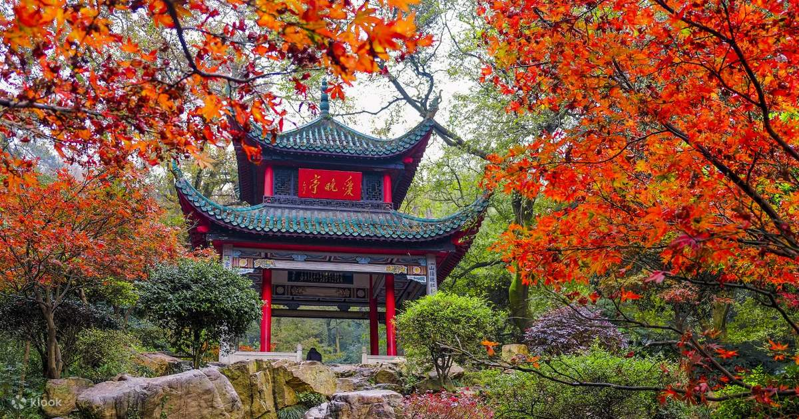
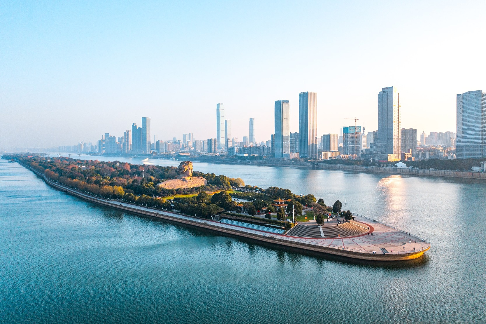
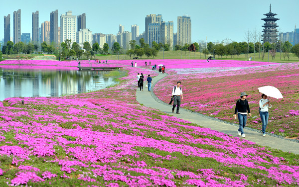

Yuelu Mountain, a 300-meter-tall mountain on the west bank of the Xiang River, is Changsha’s most beloved natural escape—lush with pine and bamboo forests, dotted with ancient temples, and crisscrossed with hiking trails. It’s not just a mountain; it’s a cultural landmark: for centuries, poets, scholars, and monks have sought inspiration here.
Autumn (October–November): Red maple leaves, cool weather (15°C–20°C).
Spring (April–May): Wildflowers bloom, and the forest is lush green.
Entry Fee:Free entry (no charge to hike).
Cable Car: 50 CNY one-way; 80 CNY round-trip.
Lushan Temple: 15 CNY/adult; 7.5 CNY/students.

Orange Isle, a 5-kilometer-long island in the middle of the Xiang River, is Changsha’s “green lung”—a sprawling park with grasslands, flower gardens, and views of the river on both sides. It got its name from the orange groves that once covered the island (you can still pick oranges here in autumn!).
Spring (March–April): Peach blossoms bloom, 12°C–20°C.
Autumn (October–November): Orange harvest season, cool weather (15°C–22°C).
Entry Fee:Free entry (no charge to enter the park).
Bike Rental: 20 CNY/hour; 50 CNY/day.
Ferry to the Island: 10 CNY/person (round-trip).

Yanghu Wetland Park, 10 kilometers southwest of downtown Changsha, is one of southern China’s largest urban wetlands—covering 4,000 acres of lakes, marshes, and lotus ponds. It’s a haven for wildlife: over 150 bird species (including egrets and herons) live here, and in summer, the ponds are covered in pink lotus flowers.
Summer (July–August): Lotus flowers bloom, 25°C–30°C (visit in the morning to avoid heat).
Winter (December–January): Migratory birds arrive—great for bird watching.
Entry Fee: Free entry.
Paddle Boat Rental: 60 CNY/hour (2 people); 80 CNY/hour (4 people).
Wetland Museum: Free entry.